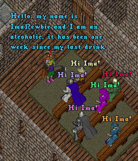
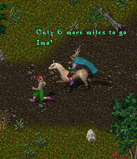
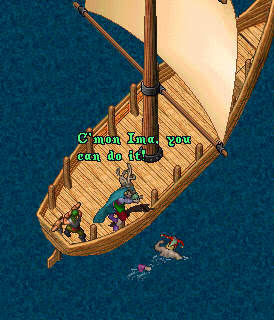
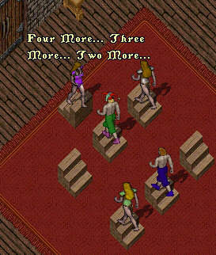
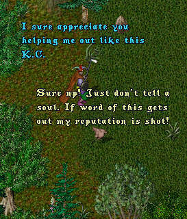

Episode 60: The Fall and Rise of Imanewbie (Part 2). Seeing his poor Irma being dragged into the depths of depravity by that fiend, Lance Sterling, ImaNewbie vows to cast away the bottle and rescue his love. As this episode opens we see ImaNewbie attending a meeting of the Britain Branch of AA.

With ImaDufus acting as his personal trainer,
ImaNewbie has begun an intensive daily workout
routine to rid his body of the poisons and get
himself in shape for the confrontation to come.
Starting with a brisk 25 mile jog.

Followed by swimming the straits from Vesper
to the island of Nujelm.

Finishing with a strenuous workout on the
Stairmaster at the local health spa.

Honing his weapons skills, Ima prepares himself for battle by sparring
with none other than his arch-nemesis...The Killer Chicken!
